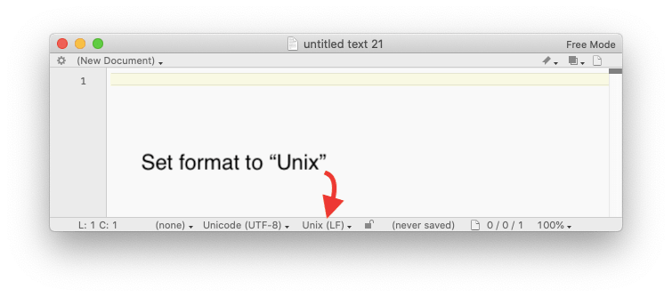

Lesson 0: Configuring your computer¶
(in 7 easy steps)
© David Gold. Except where the source is noted, this work is licensed under a Creative Commons Attribution License CC-BY 4.0.
Note
The Following protocol assumes you are using a Mac (i.e. Unix). Things will be a little different if you are using a computer running Linux or Windows operating systems.
0.1. First things first¶
Make sure your computer’s operating system is up to date! This might take a while but it’s worth it.
0.2. Find your Terminal application¶
Press Command + spacebar to launch Spotlight. Type “Terminal” into the search bar, and then double-click the top search result. You could also search for Terminal using Mac’s Finder application.
You will want easy access to Terminal in the future. Right-click the Terminal icon on your dock and select Options > Keep in Dock
You will need to locate your PowerShell program to install Windows Subsystem for Linux. You can find it by typing “PowerShell” into your computer’s search bar.
0.3. Install XCode (Mac Only)¶
Xcode provides a suite of development tools and libraries produced by Apple. Xcode’s Command Line Tools are particularly important as they include the GCC (GNU Compiler Collection) compiler, which is required by many of the programs we use.
You can either download XCode from the Apple App Store or install the command line tools directly by pasting the following command into Terminal:
xcode-select --install
0.4. Install Homebrew¶
In this lab we will be using lots of different packages, or archives that contain computer software. Packages can range from executable files, which you are probably familiar with (e.g. icons that say “click here to install”) to source code written in a variety of computer languages. These source code-based packages often require dependencies, or other packages needed for proper implementation. It can all be a little overwhelming, even for those familiar with coding.
Fortunately there are package managers that automate the process of installing, configuring, and upgrading computer programs. In this lab we will be using Homebrew. Install it by pasting the following in your Terminal.
/bin/bash -c "$(curl -fsSL https://raw.githubusercontent.com/Homebrew/install/master/install.sh)"
Follow the instructions provided by Homebrew. You might run into errors or warnings during the installation, but Homebrew is well documented and will probably tell you what to do if you run into trouble. Read the output from Homebrew carefully!
0.4.1. Homebrew basics¶
With Homebrew you can search for and install packages developed by other programmers. Homebrew is accessed in Terminal by invoking the brew command.
Let’s try to search for the program wget:
brew search wget
Terminal should return something like the following:
==> Formulae
wget wgetpaste
Homebrew found two possible programs, “wget” and “wgetpaste”. We want to install wget, and we can do that with the following command in Terminal.
brew install wget
If you want to find out where wget exists on your computer, use the info command:
brew info wget
You should get the following as part of the output:
wget: stable 1.20.3 (bottled), HEAD
Internet file retriever
https://www.gnu.org/software/wget/
/usr/local/Cellar/wget/1.19.5 (50 files, 3.7MB) *
Poured from bottle on 2018-09-13 at 20:07:35
From: https://github.com/Homebrew/homebrew-core/blob/master/Formula/wget.rb
The part that says /usr/local/Cellar/wget/1.19.5 shows you the path to your program. The path is where a file or folder is stored on your computer. It lists all of the parent directories, separated by slashes (/). We will talk more about paths in the next lesson.
0.4.2. Tapping a repository¶
Some programs you want to download may be in repositories (“kegs”) that you can “tap” to access (Homebrew is full of brewing puns 🙄). Many programs scientists like to use are part of Brewsci. You can use the tap command to gain access to the Brewsci repository:
brew tap brewsci/bio
0.4.3. A couple other good commands for Homebrew¶
List all of the programs you have installed with Homebrew:
brew list
You can even look for things you have installed using grep (Global regular expression print; we’ll talk more about grep later). Make sure to replace ‘[PROGRAM_NAME]’ with the name of the program!
brew list | grep [PROGRAM_NAME]
Update all of the programs in Homebrew:
brew update
Use rm to remove a program (again, replace ‘[PROGRAM_NAME]’ with the actual name of the program):
brew rm [PROGRAM_NAME]
0.5. Install Python 3¶
Mac operating systems (OSX) come preinstalled with Python 2.7. Some programs require Python 2, But it is quickly being replaced with Python 3 (it will be no longer be updated by the developers in 2020). So let’s make sure you are working with the latest version!
First, install Python 3 with Homebrew:
brew install python
Python 2 still exists on your computer. It might be important for certain programs. If you ever get an error message while working with Python, one of the first things to check is what version of Python are you working with, and what version of Python your program requires.
Let’s set Python 3 as our default version of Python:
alias python=/usr/local/bin/python3
Now double-check which version of Python is your default:
python --version
You should get a version of Python 3:
Python 3.7.4
Python uses a program called ‘Pip’ to install packages. Make sure you are using the right version of Pip as well:
Pip --version
You should get a response like this:
pip 19.3 from /usr/local/lib/python3.7/site-packages/pip (python 3.7)
Note the reference to Python 3 at the end.
You can now access Python 3 by calling the program:
python
You will be able to tell that you are in Python because the ‘$’ starting every line in Terminal (which indicates you’re in the BASH environment) is now replaced with ‘>>>’ (which indicates you’re in the Python environment).
We will discuss working in Python later in the course. For now you can quit Python using the following command:
quit()
0.6. Download a text editor¶
A text editor is a type of computer program that manipulates plain text. This is distinct from a word processor (Such as Microsoft Word) which edits rich text. Rich text contains all sorts of additional metadata, such as font size and style, paragraph formatting, and page margin settings. You will need a text editor to develop code.
Two common text editors are BBEdit and Sublime Text. I use BBEdit. The program starts in “trial” mode for ~14 days; let the clock run out and it will switch to “free” mode. Free mode has fewer abilities but it is more than capable of handling anything being done in our lab.
A couple of things to do after you install BBEdit
Make sure to activate BBEdit’s connection to Xcode by opening BBEdit and then selecting
BBEdit > "Install Command Line Tools"in the menu.Make sure BBEdit is saving files in the “Unix (LF)” format. You can check the format at the bottom of the BBEdit window. See the picture below for an example:

0.7. Install Git¶
There are several ways to install Git on a Mac:
It should have been included when you installed the Xcode Command Line Tools. To check, paste the following prompt into Terminal:
git --version
If you don’t have it installed already, this command will prompt you to install it.
You can install it via Homebrew:
brew install git
You could use a binary installer. Git installers are maintained and available for download at the Git website